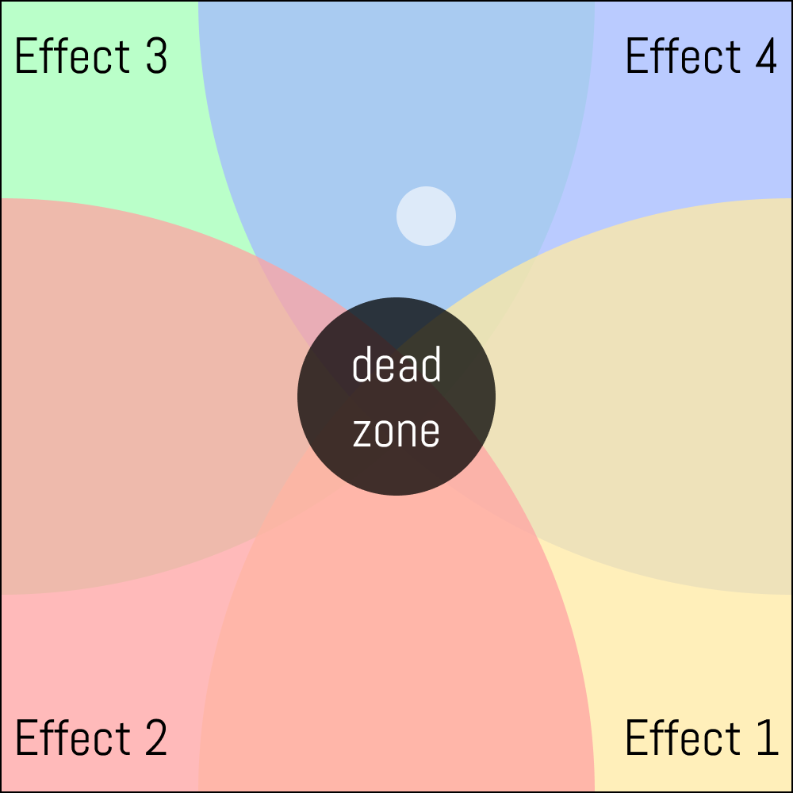

.png)
ver. 1.0
by sky hill
built by dayflower studio
here's how you play:
(NOTE: the magic house is made for mobile, so try it there instead!)
while playing The Magic House, you’ll be recording, playing back, and applying effects to audio. you have 8 channels of audio you can record into by pressing the rec buttons:
press it, and you’ll notice it turns red. this means you’re recording any and all audio from your input device to the channel specified by the record button. press it again to stop recording.
below each rec button is a play button. after you’ve recorded audio, press the play button of the same channel to play it back.
the play button plays audio back a single time per-press, like a soundboard. if you want it to loop, hit the loop button (more on that below).
there are 4 toggleable parameters in house, each with a different purpose:
the loop parameter controls toggles looping on or off. when toggled on, tapping a play button will loop its respective sample until the play button is tapped again.
the pitch parameter controls the playback pitch and speed of each individual recorded sample. when toggled on, pitch gives each sample a randomized pitch value, which varies per-sample. when toggled off, all individual sample pitches and playback speeds return to normal.
the crop parameter controls cropping and playback range of each individual sample. when toggled on, each individual sample has its playback range cropped, so that only a small part of a sample is played back, rather than the whole thing. as with pitch, when toggled off, crop values return to normal, and can be refreshed by re-toggling.
the feedback parameter passes the raw audio input of your input device through all effects and out the other end. be warned: feedback risks real-world feedback!
to apply effects, drag your thumb (or mouse) across the multicolored pad above the parameter buttons. house uses 4 effects, some of which bleed into each other and have unique auditory interactions. the drag-based logic looks like this:
depending on where you leave your gray dot, your audio could have a smattering of different effects applied to it. the closer to the corners, the more pronounced the specific effects will be; conversely, if you leave the gray dot in the center, no effects will be applied, and you can hear your dry, unaffected audio.
the Magic House has two modes: recs mode and samples mode, which allow you to play back either your custom-recorded samples, or an array of 8 provided samples, respectively. you can toggle between them using these buttons towards the bottom of the interface:
in recs mode, you can record into individual play buffers. in samples mode, you can't record into the sample buffers, and you'll notice the record buttons are grayed out. toggle buttons apply their respective effects to both recs and samples mode. likewise, if you enable looping, switch to the samples page, and then switch back, the pressed sample will continue to loop.
something worth noting: samples are passed through the effects section like user-recorded samples are.